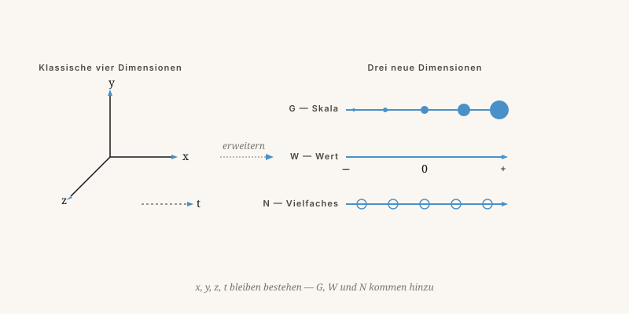

Drei Dimensionen sind zu wenig
Warum wir die Welt besser verstehen, wenn wir drei neue Dimensionen hinzufügen: Maßstab, Wert und Vielfalt.
Von Jacobus van Merksteijn · 10 Min. Lesezeit · 23. Mai 2026

Ein Himmel mit mehr Achsen als wir gewöhnlich sehen
Von vier auf sieben Dimensionen
Wir wurden mit drei Raumdimensionen und einer Zeitdimension erzogen. Vier also. Für das Greifen einer Tasse Kaffee reicht das. Für das Verstehen des Universums, eines Fusionsreaktors oder einer Gesellschaft nicht.
In meinem Modell kommen drei Dimensionen hinzu, die wir gewöhnlich vergessen oder stillschweigend in Formeln verschwinden lassen.

| Dimension | Symbol | In einfachen Worten |
|---|---|---|
| Raum | x, y, z | Wo sich etwas befindet |
| Zeit | t | Wann sich etwas befindet |
| Größe | G | Auf welchem Maßstab Sie schauen — Atom, Mensch, Galaxie |
| Wert | W | Von Antimaterie bis Materie — was etwas existenziell „wiegt" |
| Vielfalt | N | Wie viele parallele Versionen des Systems es gibt |
Maßstab, Wert und Vielfalt
Derselbe Denkrahmen funktioniert für Gesellschaften
Maßstabsgesetz in der Politik
Eine Politik, die auf Gemeindeebene funktioniert, kann auf nationaler Ebene das Gegenteil bewirken. Das ist kein Zufall — das ist ein Maßstabsgesetz. Dieselbe Physik wie bei Ameise und Elefant.
Werte, die nicht in der Bilanz stehen
Respekt, Würde und Vertrauen haben ihren eigenen W-Wert, der zählt, auch wenn er nicht in einer Tabelle steht. Wer nur Euro zählt, übersieht eine ganze Dimension.
Vielfalt als Experimentierfeld
Ein Land ist ein Experiment. Zwanzig Länder, die jeweils anders wählen, liefern Beweise. Vereinheitlichende Gesetzgebung ist dann schlechter als Wettbewerb zwischen Mitgliedstaaten — N-Wert vernichtet.
Ein Denkrahmen, keine bewiesene Theorie
Ehrliche Antwort: Es ist ein Denkrahmen, keine bewiesene Theorie. Ich habe ihn entwickelt, weil die bestehenden Modelle zu viele ad-hoc-Pflaster benötigen: dunkle Materie, dunkle Energie, Feinabstimmung von Konstanten.
Ein gutes Modell erklärt viel mit wenig. Mein Modell versucht das, indem es drei fehlende Achsen hinzufügt. Ob es stimmt, weiß ich nicht mit Sicherheit.
„Eine neue wissenschaftliche Wahrheit triumphiert nicht dadurch, dass ihre Gegner überzeugt werden und sich als belehrt erklären, sondern vielmehr dadurch, dass ihre Gegner allmählich aussterben und dass die heranwachsende Generation von vornherein mit der Wahrheit vertraut gemacht ist."
— Max Planck
Drei Dimensionen sind zu wenig
Das Universum, einen Fusionsreaktor und eine Gesellschaft versteht man erst, wenn man drei fehlende Achsen hinzufügt: Maßstab, Wert und Vielfalt.
Wir sind mit drei Raumdimensionen und einer Zeitdimension aufgewachsen. Für eine Tasse Kaffee reicht das. Für das Verstehen des Universums nicht. Im 7D-Denkrahmen kommen drei weitere Dimensionen hinzu: G (Größe oder Maßstab), W (Wert — das Spektrum von Antimaterie bis Materie) und N (Vielzahl paralleler Systeme).
G erklärt, warum eine Ameise von einem Wolkenkratzer fällt, ohne Schaden zu nehmen, ein Elefant hingegen nicht: dasselbe Gesetz, ein anderes Ergebnis auf einem anderen Maßstab. W erklärt, warum wir das, was wir „Dunkle Materie" nennen, nicht sehen können: Es ist gewöhnliche Materie mit einem anderen W-Wert, wie ein Sender auf 100 MHz unsichtbar für einen Empfänger auf 90 MHz ist. N anerkennt, dass ein schwarzes Loch von innen möglicherweise ein Eingang zu einem anderen System ist.
Derselbe Denkrahmen funktioniert für Gesellschaften. Eine Politik, die auf Gemeindeebene funktioniert, kann auf nationaler Ebene das Gegenteil bewirken — das ist das Maßstabsgesetz G. Wer nur Euro zählt, verpasst den W-Wert von Respekt und Vertrauen. Und zwanzig Länder, die jeweils anders wählen, liefern mehr Erkenntnisse als ein uniformes System — das ist N als Versuchsfeld.
Ein Denkrahmen, keine bewiesene Theorie
Ehrliche Antwort: Es ist ein Denkrahmen, der drei fehlende Achsen hinzufügt, um bestehende Modelle weniger ad hoc zu machen. Ob er stimmt, weiß ich nicht mit Sicherheit. Wie Max Planck sagte: „Eine neue wissenschaftliche Wahrheit pflegt sich nicht in der Weise durchzusetzen, dass ihre Gegner überzeugt werden, sondern dadurch, dass die Gegner allmählich aussterben und die heranwachsende Generation von vornherein damit vertraut gemacht wird."